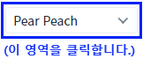
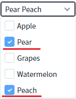
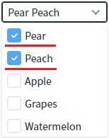

CheckCombobox의 'showCheckedTop' 속성을 사용하여 선택된 항목이 목록의 상단에 표시되도록 설정한 예제입니다.
설정에 따른 동작은 아래와 같습니다. - "false" : [default] 목록의 순서대로 선택된 항목이 표시됩니다. - "true" : 선택된 항목이 목록 상단에 표시됩니다.
이 기능은 'checkboxClickSync' 속성이 'true'로 설정되어야 동작합니다.
목록 상단에 선택된 항목을 표시하기
목록의 순서에 따라 선택된 항목을 표시하기
예제 영역 '(기본 설정) 목록의 순서에 따라 선택된 항목을 표시하기'에서 테스트합니다.1
STEP 1: 초기 상태를 확인합니다.
CheckCombobox에 'Pear' 항목과 'Peach' 항목이 선택된 상태입니다.
2
STEP 2: 목록을 확장합니다.
Image 1.브라우저(Chrome) 실행 예시

3
STEP 3: 실행된 결과를 확인합니다.
목록의 순서대로 선택된 항목이 표시됩니다.
Image 2.브라우저(Chrome) 실행 예시

예제 영역 '목록 상단에 선택된 항목을 표시하기'에서 테스트합니다.1
STEP 1: 초기 상태를 확인합니다.
CheckCombobox에 'Pear' 항목과 'Peach' 항목이 선택된 상태입니다.
2
STEP 2: 목록을 확장합니다.
Image 3.브라우저(Chrome) 실행 예시
3
STEP 3: 실행된 결과를 확인합니다.
목록의 상단에 선택된 항목이 표시됩니다.
Image 4.브라우저(Chrome) 실행 예시

컴포넌트의 속성을 정의합니다.
[필수] showCheckedTop="true"
체크된 항목을 상단에 표시하고 체크되지 않은 항목은 그 아래에 표시합니다.
(옵션 설명)
- "false" (기본 값) : 체크된 항목이 원래의 리스트 위치에 그대로 보여진다.
- "true" : 체크된 항목들이 리스트의 상단에 보이고 체크되지 않은 항목이 그 아래에 보이게 된다.
[필수] checkboxClickSync="true"
이 속성이 "true"로 지정되어야 'showCheckedTop' 속성이 동작합니다.
showCheckedTop
checkboxClickSync